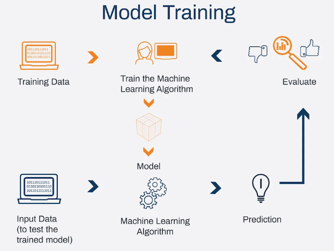

WEEK 3 - LITERATURE REVIEW
Machine Learning: Algorithms, Real World Applications and Research Directions
BACKGROUND / MOTIVATION :
Describe the context in which the research was conducted
Predictive process analytics is a rapidly growing field that uses machine learning to forecast future business processes, particularly in industries like healthcare, manufacturing, finance, and logistics. This helps optimize workflows and improve decision-making processes. However, as organizations adopt predictive analytics, the accuracy of these models has improved, but this has led to a loss of interpretability. This study is part of explainable artificial intelligence (XAI), which aims to make machine learning models more transparent. Without understanding the reasons behind predictions, stakeholders may hesitate to trust or act on them, leading to increased regulatory scrutiny in sectors like healthcare and finance, where decisions directly impact human lives.
What problem or gap in the existing literature does the paper aim to address?
This study aims to address the systematic evaluation of explainability techniques in predictive process analytics, which has been recognized as an open problem. While the literature is such that quite a number of papers exist that are concerned with the improving predictive models or proposing new XAI methods, no standard evaluation frameworks have been developed to evaluate the methods in terms of reliability, stability, and fidelity. This study develops functionally-grounded evaluation metrics for measuring stability and fidelity of explanations produced by some of the popular XAI methods, namely LIME and SHAP, as well as checks whether these methods deliver consistent and faithful explanations for predictive process models constructed using XGBoost, a widely employed machine learning algorithm known for its high classification accuracy.
SIGNIFICANCE OF RESEARCH QUESTION
A Guided Investigation into LIME and SHAP Explainability in Process Analytics - Reviewed for the effectiveness of predictive models’ explanations. - Benefited the reliability of explainability methods undertaken by organizations. - Promoted trust in machine learning-enabled decision-making. - Provided a potential agenda for future research in XAI.
METHODS USED
Methodologies employed and how these methods are suited to address the research question.
Two properties, namely stability and fidelity, are assessed in this study by means of functionally grounded evaluation metrics. These metrics are calculated using predictive process models trained with XGBoost and are then conducted on three real-world event log datasets. The processes employed include:
Model Training:
XGBoost models are trained on three real-world event log datasets that capture business process execution data.

Explanation Generation:
LIME and SHAP explain the predictions made by the trained XGBoost models.
Stability Assessment:
Stability is assessed by generating explanations for similar instances and measuring how consistently the explanations remain.
\[ \[ Z = 1 - \frac{1}{d} P_d \sum_{i=1}^{s^2} f_i^k d \left(1 - \frac{k}{d} \right) \] \]
where; - d = Number of features encoded from event attributes in the log
- M = Number of explanations generated for the process instance
- k = Number of most relevant features, where relevance or level of importance
is determined by an explanation generated for the process instance
- k = Average number of features selected across all M explanations for the
process instance
- s²_fi = Sample variance of the presence of feature fᵢ across all M explanations
for the process instance
- Z = Binary matrix of size M × d. Each row of the binary matrix represents
a feature subset, where a 1 at the i-th position means feature fᵢ has been
selected and a 0 means it has not been selected.
Fidelity Assessment:
Fidelity is evaluated by perturbing input features based on the explanation and observing how the corresponding predictions of the model change.
The fidelity (F) of the interpreter for a single process instance in an event log is defined as:
\[ \[ F = \frac{1}{|X_0|} \sum_{x \in X_0} \frac{|Y(x) - Y(x_0)|}{Y(x)} \] \]
Where:
- ( x ) = Original feature vector for the process instance. - ( X_0 ) = Set of perturbations for ( x ) and ( x_0 X_0 ) - ( Y(x) ) = Prediction probability given input ( x ) - ( Y(x_0) ) = Prediction probability given input ( x_0 )
This measure is naturally bounded by the fact that prediction probabilities
fall between 0 and 1.
Discuss any innovative approaches or techniques that are particularly noteworthy.
The study uses the functionally-grounded evaluation approach to assess the quality of explanations generated by LIME and SHAP. Stability and fidelity are crucial for building trust in machine learning models, while the study introduces specific perturbation techniques for event log data. This innovative approach adapts functionally-grounded evaluation metrics to predictive process analytics, ensuring that the methodology is well-suited to the characteristics of business process datasets. This approach is particularly useful for comparing reliable and misleading explanations. The study’s innovative approach and techniques contribute to the field’s advancements.
SIGNIFICANCE OF THE WORK
Highlight the key findings and contributions of the paper.
Studies on XAI Methods for Predictive Process Analytics 1. SHAP is more stable than LIME because it makes sure that similar cases are explained the same way. 2. Both LIME and SHAP have reasonably moderate fidelity scores of use in explanations but do not always correspond to the reasoning provided by the model. 3. Preprocessing choices make a difference in the reliability of explanations, which would be recommended to be taken into consideration when it comes to predictive process analytics.
Explain why the results are important within the broader context of the field.
These findings will have far-reaching implications for hydroponics in settings where the output, reasoning, and structure of predictive analytics must be explained. An interpretable AI diagnosis may boost the trust of healthcare professionals-diagnosticians in the system. In finance, AI-driven risk evaluation demands greater transparency from regulatory authorities on how the assessments are made. Addressing these issues by fostering the evaluative process of explainability methods assures the responsible adoption of AI in decision-making processes.
Discuss the implications of the findings for future research or practice
Predictive process analytics uses machine learning models to predict future process behavior, but their decision-making process can be difficult for humans to understand. This research aims to develop explainable artificial intelligence (XAI) methods specifically tailored for predictive process analytics, aiming to explain not only the model’s predictions but also how different features influence them in a process context. Hybrid explainability approaches combine multiple techniques to improve the quality and reliability of AI explanations. For example, a hybrid approach could combine local explanation methods like LIME with global methods like SHAP, providing detailed and generalizable insights into a model’s behavior. Research could also investigate the reliability of explanation methods across different machine learning algorithms, helping to identify the most effective XAI techniques for specific models and use cases.
CONNECTION TO OTHER WORK
Relate the paper to other relevant studies
- Research mainly products process monitoring with a particular focus on process-aware AI models and explainable dashboards.
- Updates existing work on LIME and SHAP, evaluating the reliability of the approaches in the context of predictive analytics.
- Develops toward more general XAI frameworks, focused on fidelity-and-stability assessment.
- Extends earlier work by critically examining the applied methods in the domain of XAI rather than merely implementing them.
How does this paper build on or differ from previous work?
This paper critically evaluates the reliability of XAI methods, moving beyond performance benchmarks to examine consistency and accuracy. It introduces a structured functionally-grounded evaluation framework applicable across different datasets and model architectures, and investigates real-world datasets for relevance and applicability.
RELEVANCE TO CAPSTONE PROJECT
Discuss how the content of the paper might be relevant to your own capstone project.
The core of the capstone deals with designing predictive models with historical data, directed essentially toward an explanation for the sake of transparency. The findings of the study may determine the best explanation method to be applied, while evaluation metrics functionally grounded can be adjusted for interpretability assessment. Trust and reliability are paramount in AI-assisted decision-making.
Identify any specific methods, theories, or findings that you might incorporate into your project.
We suggest the use of SHAP for feature attribution, as it shows strong stability and fidelity.
Use stability and fidelity metrics to test the reliability of your explanations.
Use perturbation approaches to validate your model explanations.
Investigate how functionally grounded evaluation can be extended to additional learning algorithms beyond XGBoost.
Highlight any potential areas where your capstone could expand upon or diverge from the paper’s findings.
This paper discusses the potential of a project to evaluate the explainability of deep learning models using hybrid methods like LIME and SHAP, incorporating user feedback for real-world application evaluation, and exploring additional domain-specific interpretability measures tailored to the project’s dataset and objectives.
REFERENCES
Du, M., Liu, N., Yang, F., Ji, S., Hu, X.: On attribution of recurrent neural network predictions via additive decomposition. In: The World Wide Web Conference - WWW 19 (2019).(https://doi.org/10.1145/3308558.3313545)
Mehdiyev, N., Fettke, P.: Prescriptive Process Analytics with Deep Learning and Explainable Artificial Intelligence. In: ECIS 2020 Proceedings. Marrakech, Morocco (15-17 June 2020),(https://aisel.aisnet.org/cgi/viewcontent.cgi?article=1121&context=ecis2020_rp)
SRUJAN BOMMENA